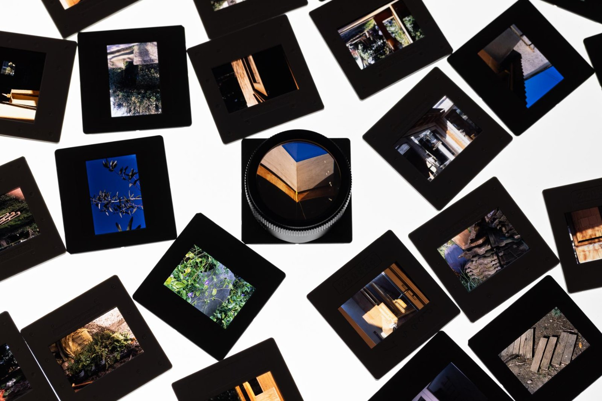
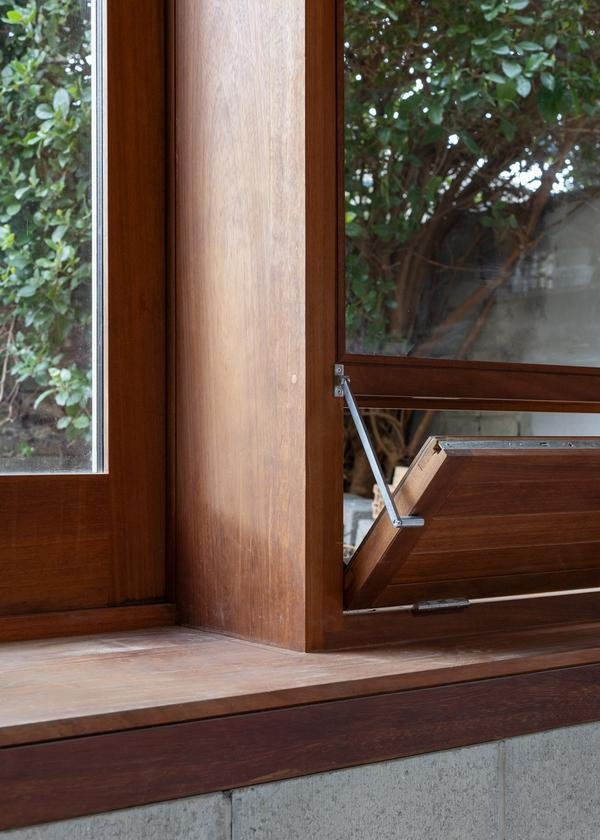
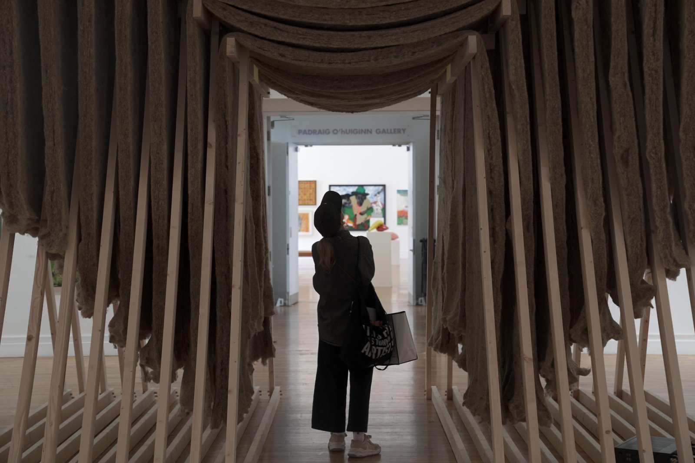
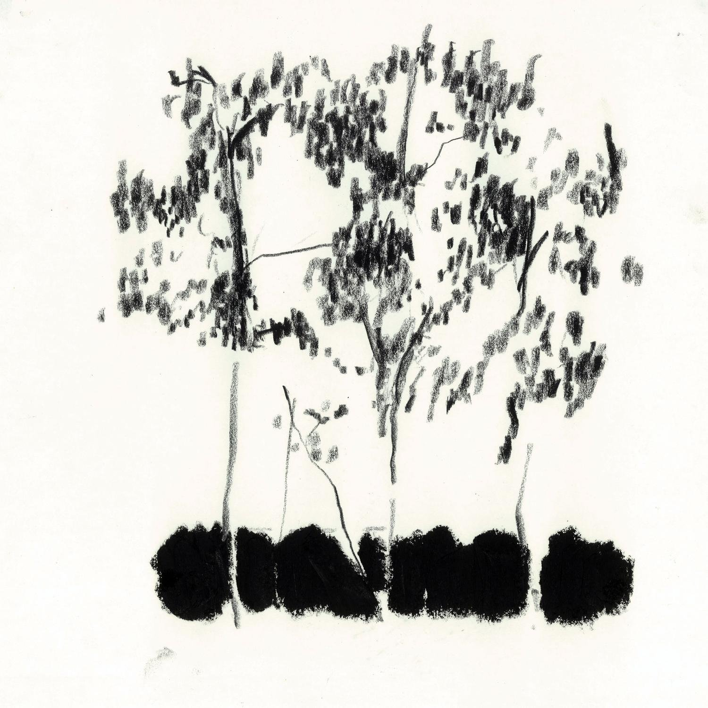

A small practice concerned with how buildings and their landscapes hold together over time.
ben mullen architects works across new buildings, conservation and exhibition, from initial design through to self-build and construction management. Each project begins from its ground — its climate, its materials and the ecology it belongs to — and treats environmental concern not as a constraint but as the starting point of the design.
Selected buildings, exhibitions and conservation work follow below. For new commissions and collaborations, please get in touch.





Buildings, exhibitions and conservation across Ireland, 2021–2025. Further projects and drawings available on request.
Enquire →
A house designed, built and managed from the ground up. Kilmantin Road brought the practice's whole scope together — design, self-build and project management — and was recognised with an AAI Award in 2025.
The work sits lightly on its site, ordered by the materials it is made of and the landscape it looks onto.

The practice works with architecture and landscape design to address environmental concerns as the primary aesthetic problems of our time.
Ben Mullen is a graduate of SAUL, the School of Architecture at the University of Limerick. The practice works across new buildings, conservation and exhibition, taking each project from first sketch through to construction.
Work ranges from private houses and the conservation of protected structures to installation and competition pieces — including OTIUM and The Fall, exhibited as the Art of Architecture Pavilion at the RHA in 2025.